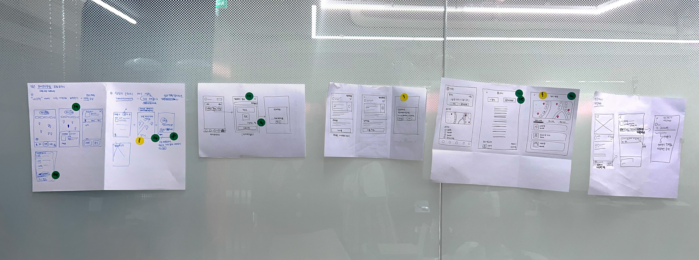
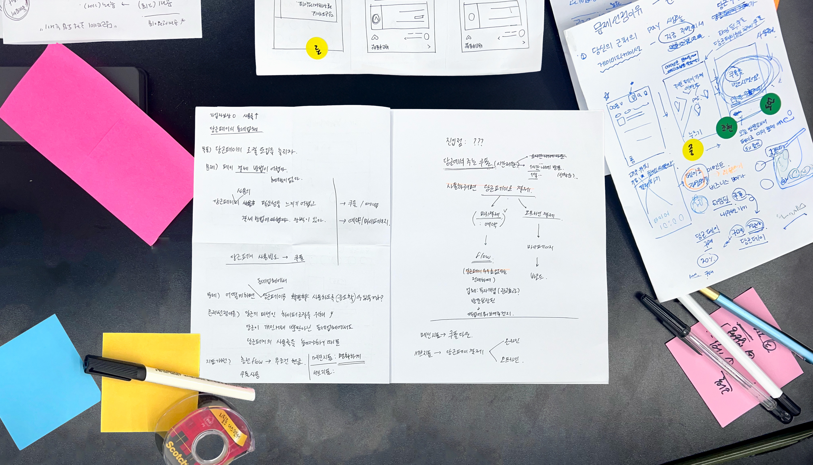
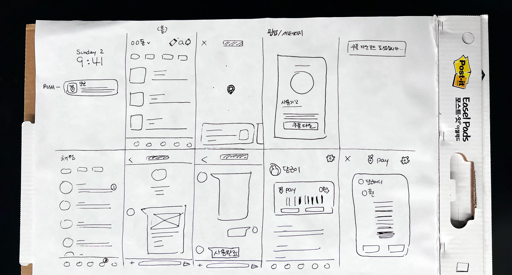
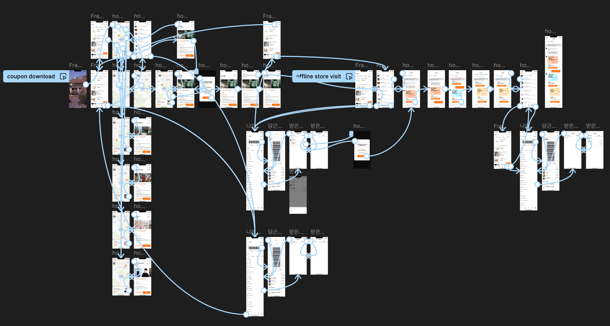

| Goal : Increase the local adoption of Karrot Pay
| Objective : Enhance the usage of Karrot Pay among local businesses and users
| Duration : 2 days
| Role : Research, Solution Sketch, Product Design, User Testing
| Tools : Figma
Karrot is a hyper-local community app that connects neighbors to buy, sell, and share items and services. Launched in South Korea in 2015, Karrot quickly grew in popularity by fostering trust and convenience within local communities. Its success is attributed to its user-friendly interface, strong focus on local interactions, and the ability to build a sense of community among users. By addressing the needs of hyper-local markets, Karrot has expanded rapidly, making it a go-to platform for neighborhood transactions and services.
However, the adoption of Karrot Pay, a feature designed for seamless transactions, remains lower than desired due to limited user awareness and perceived benefits.
Sprint Goals
The main goal of this sprint was to seek for a way to increase the local adoption of Karrot Pay. Our team aimed to increase the usage of Karrot Pay by enhancing its utility within local businesses.
Why this problem?
Despite Karrot's success in connecting individuals for personal transactions, the adoption of Karrot Pay in local businesses was lagging. This posed a significant barrier to achieving Karrot's mission of becoming a hyper-local community platform not just for personal but also for business transactions.
Why local businesses?
Karrot Pay can be used for secondhand transactions between users, we recognized that leveraging the existing local business feature could boost the frequency of Karrot Pay transactions by offering greater potential for sustained usage.
To achieve this, we focused on finding a solution that would incentivize both businesses and users to adopt Karrot Pay more actively. We hypothesized that offering temporary, exclusive benefits through coupons could drive initial usage and demonstrate the value of Karrot Pay to both businesses and users.
Customer Journey Map

1st iteration

2nd iteration

3rd iteration
We mapped out the journey of both local business owners and customers, identifying pain points and opportunities to introduce Karrot Pay as a solution.
Solution Sketch

Based on the journey map, we each brainstormed and sketched possible solutions, focusing on ease of use and integration into the current app interface. We worked on these sketches separately to ensure a diverse range of ideas. After individually designing our solutions, we came together to discuss and evaluate each one, ultimately converging on the most rational and effective ideas through collaborative discussion.
Proposed Solution

We reached to a reasonable agreement of creating an event-based coupon system where users could receive benefits by making payments through Karrot Pay. These coupons would be available for a limited time and could only be redeemed via Karrot Pay, thus incentivizing users to use the feature.
This approach aligns with Karrot's mission of hyper-local engagement by extending the app's utility beyond personal transactions to local businesses. By introducing time-limited coupons, we aimed to create a sense of urgency and immediate value, addressing the current lack of perceived benefits associated with Karrot Pay.
Storyboard

We created a storyboard to visualize how users would interact with the coupon system, from discovering the coupons to making a purchase with Karrot Pay.
Expected Key Metrics
Key Metrics to Improve:
1. Increase in new users of Karrot Pay through the local 'Time Deal Coupon' events.
2. Higher transaction volume through Karrot Pay compared to the number of coupons downloaded.
By solving this problem, we aimed to boost the number of new users who use Karrot Pay and increase the transaction frequency through Karrot Pay.
Prototype

Using Figma, we developed a high-fidelity prototype of the coupon system within the Karrot app, ensuring a seamless user experience.
Feel free to check out the entire screen here.
User Testing
We conducted interviews and usability tests with potential users to gather feedback and iterated on the design based on their input.
Interview Questions
1. How would you find a coffee shop near you that's holding a special event?
2. Suppose you are at the coffee shop and grab coffee at a discounted price.
3. After buying the coffee, how would you check your transaction to ensure you used Karrot Pay successfully?
By solving this problem, we aimed to boost the number of new users who use Karrot Pay and increase the transaction frequency through Karrot Pay.
Final Look based on User Feedback
Lessons & Takeaways
By focusing on enhancing the local adoption of Karrot Pay through a strategic coupon system, we aimed to bridge the gap between Karrot's personal and business transactions, reinforcing its mission of hyper-local community engagement. This design sprint provided valuable insights and a practical solution to drive Karrot Pay's usage, contributing to the overall growth and success of the Karrot app.